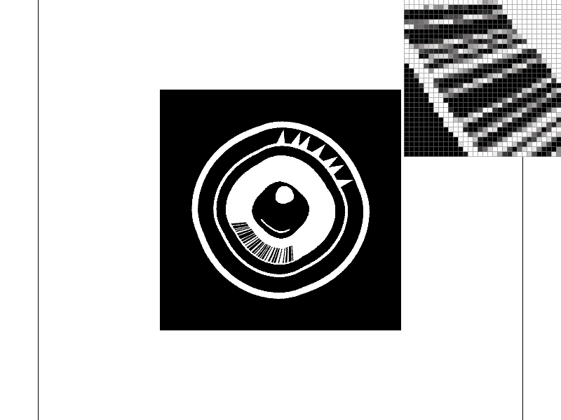

Overview
In this project, we implemented a software rasterizer that can take SVG files and render them on the screen. We implemented a basic pipeline, including parsing the SVG files, triangulating the polygons, and rasterizing the triangles. We also implemented a basic shading model that allows us to render triangles with varying colors. Overall, we learned a lot about computer graphics and how to build a software rasterizer from scratch.
Section I: Rasterization
Part 1: Rasterizing single-color triangles
To rasterize triangles, we first iterate over the bounding box of the triangle and check each pixel to see if it lies inside the triangle. We then calculate the barycentric coordinates of the pixel with respect to the triangle using a point-in-triangle test. If all three barycentric coordinates are non-negative, then the pixel lies inside the triangle. We then calculate the sample point in the center of the pixel and call the fill_pixel() function to draw the pixel with the triangle's color.
Our algorithm is no worse than one that checks each sample within the bounding box of the triangle because we only calculate the barycentric coordinates for the pixels that lie inside the triangle. This means that we only need to calculate the barycentric coordinates for a fraction of the pixels in the bounding box, which is more efficient than checking every sample point within the bounding box.
Additionally, the implementation uses supersampling to anti-alias the edges of the triangle. However, it performs only uniform supersampling by dividing each pixel into equal-sized subpixels. It would be better to use a more advanced technique like adaptive supersampling to avoid wasting samples on pixels that are already fully covered by the triangle. Overall, the implementation of the basic triangle rasterization algorithm is a good starting point. Still, it could be improved by computing the Barycentric coordinates more accurately and using a more advanced supersampling technique.

|

|

|

|
Part 2: Antialiasing triangles
Supersampling is a technique used to reduce aliasing artifacts in computer graphics. We implemented a grid-based supersampling algorithm that creates a grid of subpixels within each pixel and evaluates the color of the subpixels to determine the final color of the pixel. Our algorithm uses a 2D array to store the colors of the subpixels.
In our implementation, we modified the rasterization pipeline to first render the scene to a high-resolution image, and then downsample the image to the target resolution using the supersampling algorithm. This allows us to accurately capture the fine details of the scene and reduce aliasing artifacts.
To antialias triangles, we first determine which subpixels of a pixel are inside the triangle using the same edge equation used for rasterization. We then compute the barycentric coordinates of the subpixel within the triangle, and use these coordinates to interpolate the color of the triangle at that point.
We used supersampling to antialias the triangles in the test scenes. The results can be seen in the following screenshots:

|

|

|

|
As we increase the sample rate, the aliasing artifacts become less pronounced and the edges of the triangles become smoother. This is because the additional subpixels allow us to more accurately capture the fine details of the scene and reduce the error in the edge equation.
Part 3: Transforms
In Task 3, we were required to implement three transforms in the transforms.cpp file according to the SVG spec. These transforms were translate, scale, and rotate, and they operate in homogeneous coordinates, which means that they are 3x3 matrices. We were able to see how these matrices would be used on instances of Vector2D by looking at the way the * operator is overloaded in the same file.
To implement the translate transform, we filled in the code for the translate() function, which takes in two float arguments, dx and dy, and returns a Matrix3x3 object that represents the translation matrix. We created this matrix by setting the appropriate values in the matrix to the corresponding values for a translation matrix.
For the scale transform, we filled in the code for the scale() function, which takes in two float arguments, sx and sy, and returns a Matrix3x3 object that represents the scaling matrix. We created this matrix by setting the appropriate values in the matrix to the corresponding values for a scaling matrix.
For the rotate transform, we filled in the code for the rotate() function, which takes in one float argument, deg, and returns a Matrix3x3 object that represents the rotation matrix. We created this matrix by using the sine and cosine of the input argument, which is in degrees counterclockwise, and setting the appropriate values in the matrix to the corresponding values for a rotation matrix.
With these transforms implemented, the robot.svg file should render correctly. The robot in the file will now be able to move and change size and orientation according to the transforms that we have implemented.

Overall, this task helped us gain a better understanding of how SVG transforms work and how they can be implemented using matrices in C++. Here, by only changing the scaling, translation, and rotation of the original robot.svg, we were able to make the robot look more sus:

Details of modification can be seen in svg/transforms/robot_transformed.svg.
Section II: Sampling
Part 4: Barycentric coordinates
Explaination of barycentric coordinates: Barycentric interpolation is a technique used to interpolate values across a triangle by expressing the value at any point in the triangle as a linear combination of the values at the vertices of the triangle. In our case, we want to interpolate the color values at each vertex of a triangle and fill the triangle with the interpolated colors.
The RasterizerImp::rasterize_interpolated_color_triangle() function takes in three arguments, three vertices of the triangle and three colors, one for each vertex. In order to interpolate the color values across the triangle, we need to calculate the color value at each pixel in the triangle. This can be done by calculating the barycentric coordinates of each pixel and using those coordinates to interpolate the color values at each vertex.
The barycentric coordinates of a point inside a triangle are the weights of the vertices that add up to 1. So for a point P in the triangle ABC, the barycentric coordinates are (u, v, w), where:
To calculate the barycentric coordinates of a point, we can use the following formula:
Once we have the barycentric coordinates for a point, we can use them to interpolate the color values at each vertex. We do this by multiplying each color value by its corresponding barycentric coordinate and then summing the results. This gives us the interpolated color value at the point.
We then use the set_pixel() function to set the color of the pixel to the interpolated color value.
After implementing the barycentric interpolation for color values, we can render svg/basic/test7.svg and see a color wheel where the colors are interpolated across the triangle area using barycentric interpolation.

|

|
|

|

|

|
As we can see, the colors of points inside the triangle are smoothly interpolated between the red, green, and blue vertices. This is because the color at any point can be computed as a weighted average of the vertex colors, where the weights are given by the point's barycentric coordinates.
Part 5: "Pixel sampling" for texture mapping
Pixel sampling refers to the process of determining the color value of a pixel on the output image based on the color values of one or more pixels on the input texture image. In texture mapping, pixel sampling is used to determine the color of a point on a triangle that is being textured by mapping a 2D texture image onto it.
In our implementation, we perform texture mapping by using the 2D texture coordinates at each vertex and the given Texture image to determine the color of the pixel. We use the PixelSampleMethod variable psm in RasterizerImp to toggle between two different pixel sampling methods, nearest neighbor and bilinear interpolation. When psm == P_NEAREST, we use nearest-pixel sampling, and when psm == P_LINEAR, we use bilinear sampling.
To implement nearest-pixel sampling, we use the Texture::sample_nearest function. This function returns the color value of the nearest texel (texture pixel) to the specified texture coordinate. To implement bilinear sampling, we use the Texture::sample_bilinear function. This function computes the weighted average of the colors of the four texels surrounding the specified texture coordinate.
The two pixel sampling methods have different trade-offs. Nearest-pixel sampling is faster but produces pixelated results, while bilinear interpolation produces smoother results but is slower. In general, bilinear sampling is preferred when there are visible differences between adjacent texels, as it provides a smoother transition between them. Nearest-pixel sampling may be preferred when the texture is intentionally pixelated, or when the texture is viewed from a distance where the differences between adjacent texels are not noticeable.
To compare the differences between the two methods, we can look at the svg files in the svg/texmap/ directory using the pixel inspector. One good example of where bilinear sampling clearly defeats nearest sampling is the "lego.svg" file. In this file, the texture of the bricks in the background is very pixelated, and nearest-pixel sampling produces very noticeable artifacts. In contrast, bilinear sampling produces a much smoother and more natural-looking result.
Here are the png screenshots we will compare:
|
|
|
|

|
|
|
|
|
|
|
|
|
|
|
|
As expected, nearest-pixel sampling produces very pixelated results, especially at low sample rates. Bilinear interpolation produces much smoother results, especially at high sample rates. The differences between the two methods are most noticeable in areas with sharp changes in color or detail, such as the edges of the bricks in the "lego.svg" file.
In general, bilinear sampling is preferred for texture mapping, as it provides a smoother and more natural-looking result. However, it is also slower than nearest-pixel sampling, so nearest-pixel sampling may be preferred in situations where speed is more important than visual quality, or where the texture is intentionally pixelated.
Part 6: "Level sampling" with mipmaps for texture mapping
Level sampling, also known as Mipmapping, is a technique used in computer graphics to increase rendering efficiency and reduce aliasing artifacts. It involves precomputing and storing scaled-down versions of the texture image called Mipmaps. When sampling the texture, the appropriate mipmap level is chosen based on the amount of texture detail needed for a given pixel. In Rasterization, this is achieved by computing the mipmap level using the partial derivatives of texture coordinates with respect to screen coordinates.
In Task 6, I implemented level sampling by modifying the Texture::sample function. When LevelSampleMethod is set to L_ZERO, the function samples the full-resolution texture image using either nearest or bilinear sampling, depending on the PixelSampleMethod. When LevelSampleMethod is set to L_NEAREST, the function computes the nearest mipmap level based on the screen-space derivatives and then performs either nearest or bilinear sampling using the selected PixelSampleMethod. When LevelSampleMethod is set to L_LINEAR, the function computes a weighted average of samples from adjacent mipmap levels using the screen-space derivatives and then performs bilinear sampling.
The tradeoffs between the three sampling techniques are primarily speed, memory usage, and antialiasing power. Pixel sampling at a high sample rate results in the highest quality images but is the slowest and uses the most memory. Level sampling is faster and uses less memory but produces lower quality images. In particular, nearest level sampling can result in texture flickering and sharp transitions between levels, while linear level sampling can produce blurrier images due to blending between levels.
The rendering results of all 6 Mipmap leveling and Texture sampling methods are displayed in the grid below. Captions describes the specific recipe.
|
|
|
|
|
|

|
|
Github Live Webpage
Webpage: https://cal-cs184-student.github.io/p1-rasterizer-sp23-babushka-yuuka-s-digital-canvas/